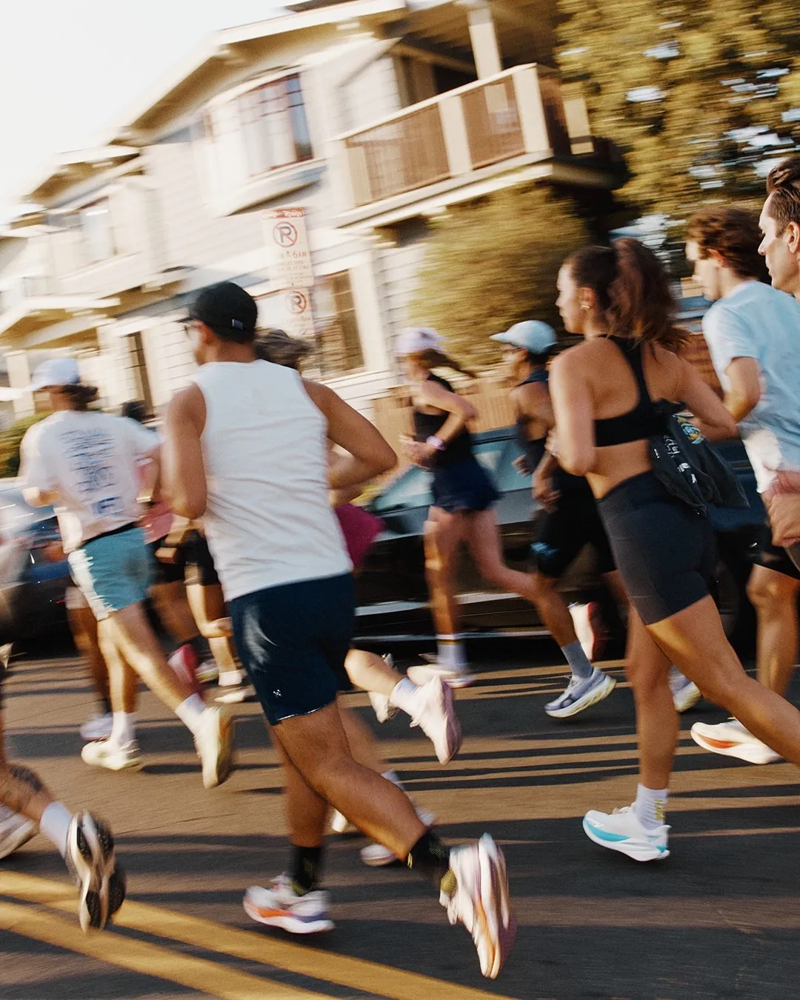
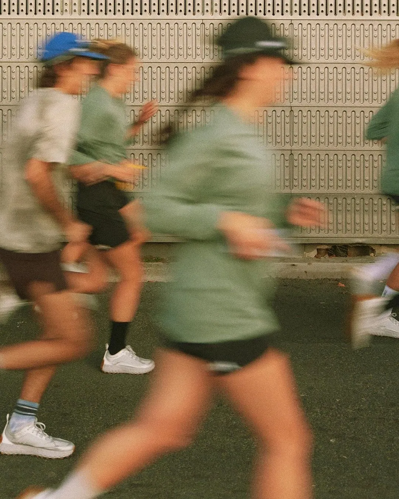
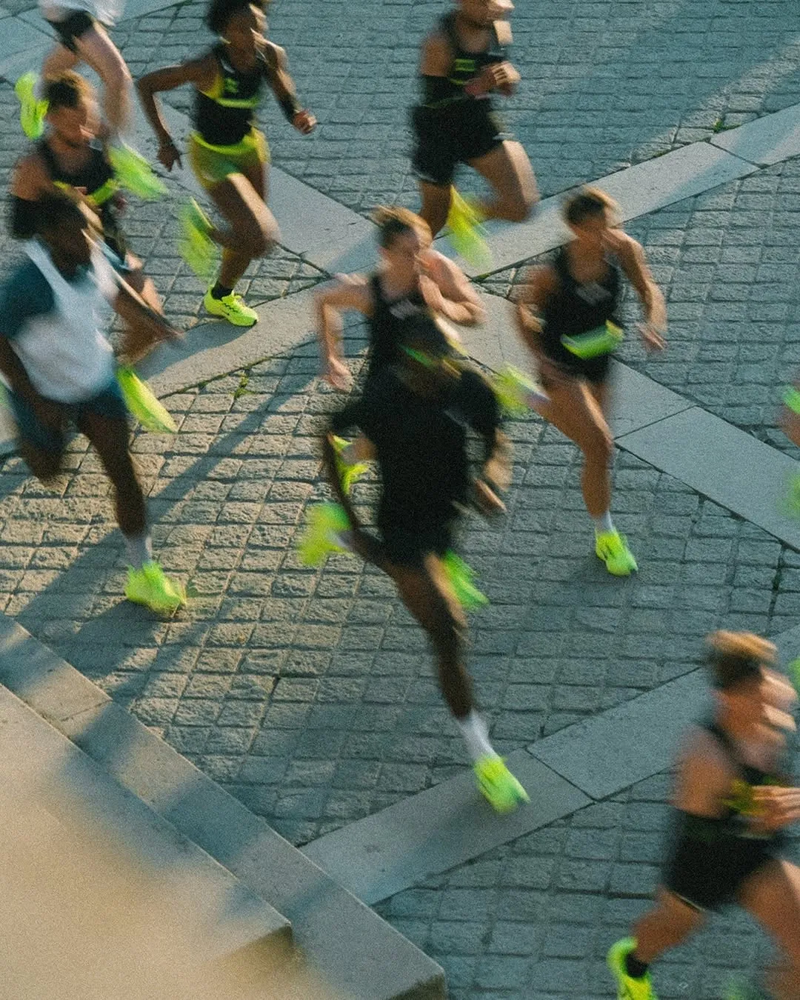
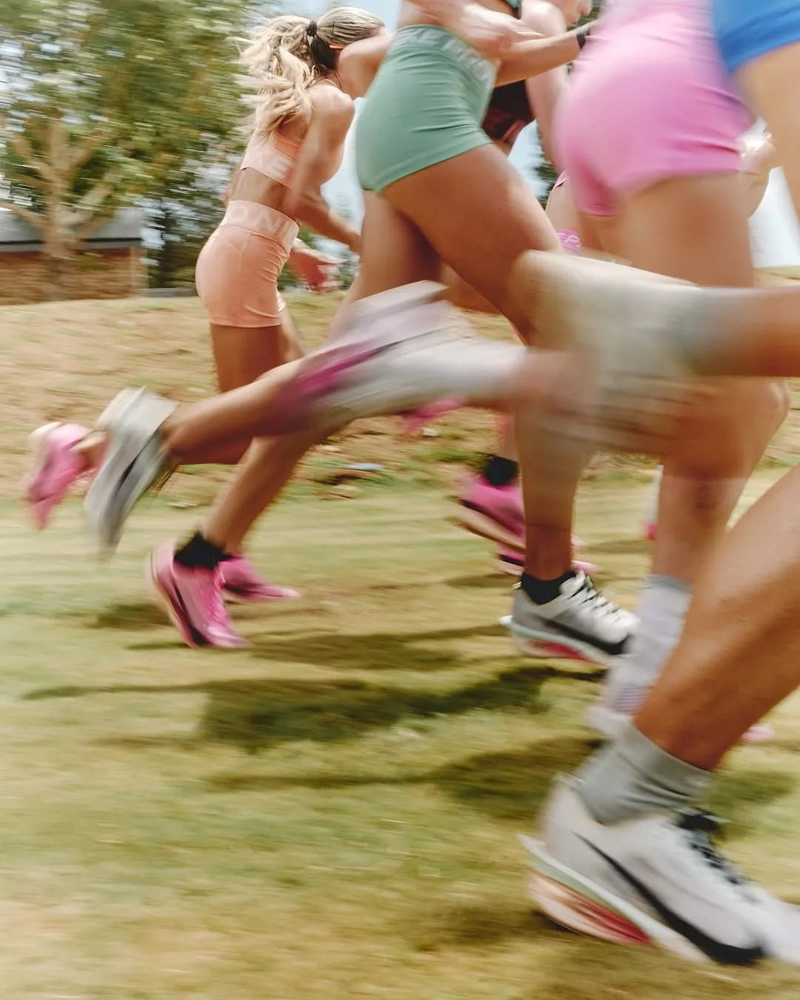
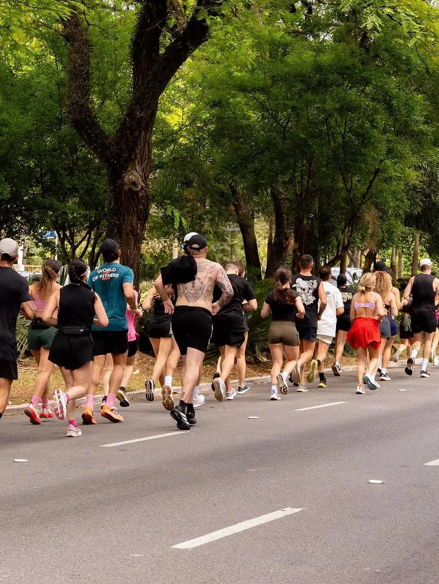

Brisa
7:00+min/km
tá começando ou intercalando corrida e caminhada? seu lugar é aqui.

aqui ninguém atrasa ninguém. você escolhe o grupo do seu pace e corre junto com gente do brasil inteiro que tá no mesmo ritmo que você.
bora correr juntoolhe o pace das suas corridas leves no relógio ou no strava. é ele que diz qual é o seu grupo, não o pace de prova.
tá começando ou intercalando corrida e caminhada? seu lugar é aqui.
já faz 5 km de boa e quer companhia pra manter o ritmo.
corre toda semana e tá com vontade de evoluir.
tá treinando pra 10k ou 21k e quer gente pra puxar junto.
já voa baixo e quer parceiro que acompanhe.
mudou de pace? é só trocar de grupo. e subir de grupo aqui é festa.


leva menos de um minuto.
clique no botão, entre no clube do pacera no strava e pronto, você já faz parte.
cada grupo tem o seu canal. entre só no canal do grupo do seu pace.
escolha o canal do seu grupo, se apresente e pronto. agora é só combinar a próxima corrida.
é ali que você conta seu objetivo, diz de onde é e acha gente pra correr junto. faz amizade, troca contato, combina o longão de domingo. o canal existe pra isso.
oi gente! sou de bh, corro a 6:40 e quero fazer minha primeira 10k em dezembro
bh também! bora sábado cedo na pampulha?
tô em curitiba, alguém pra rodar 8k amanhã às 6h?
toda mulher entra no grupo do seu pace, igual todo mundo. mas se quiser, também tem um espaço só pra elas, aberto a todos os paces. pra trocar ideia, combinar treino e correr junto com mais tranquilidade.

a casa do clube. um canal pra cada grupo, troque ideia e encontre seu parceiro de corrida.
desafio mensal que junta todos os grupos do pacera, independente do pace.
um treino pensado pro ritmo de cada grupo, de presente pra quem entra.
em breve, corridas ao vivo nas cidades com mais gente do clube.

entre no clube, escolha seu grupo e chegue dando oi. a gente tá te esperando.
entre no clube no strava